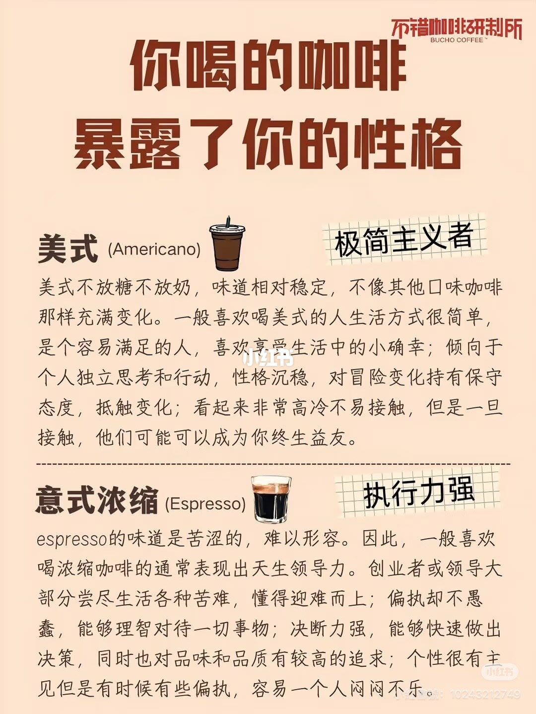
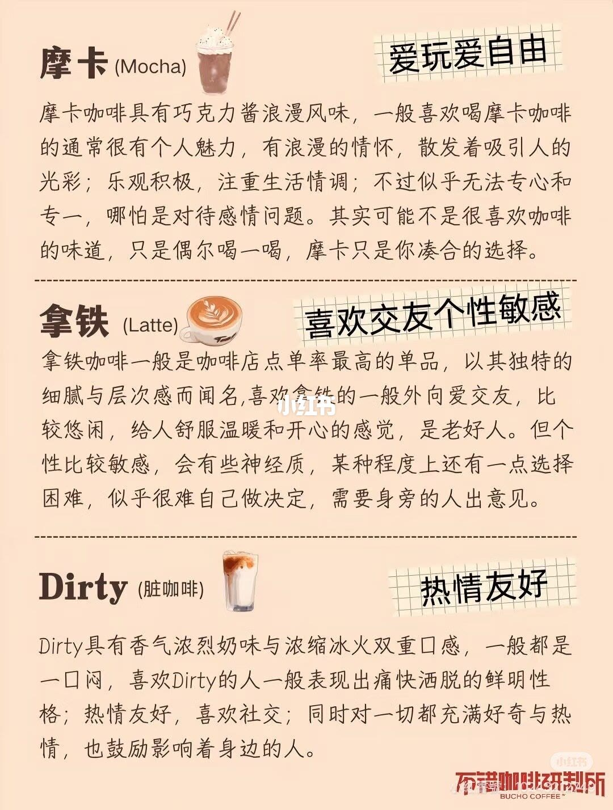
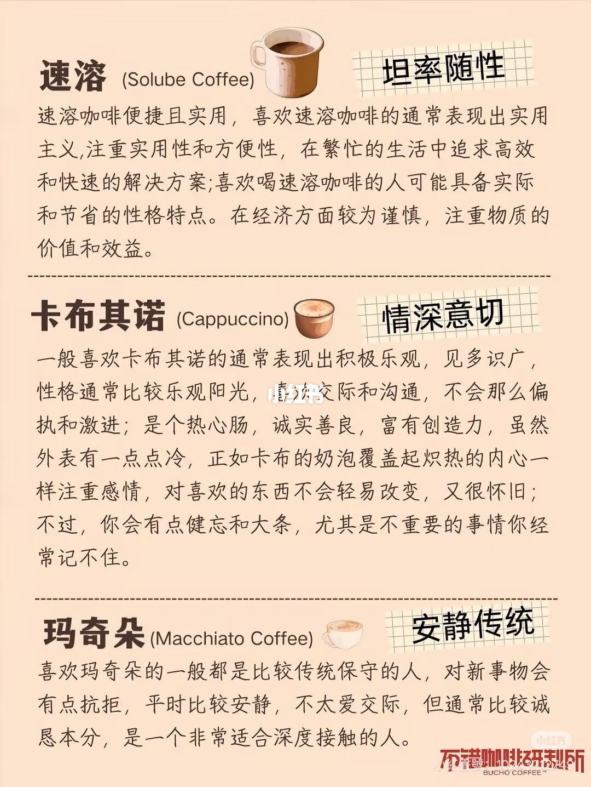
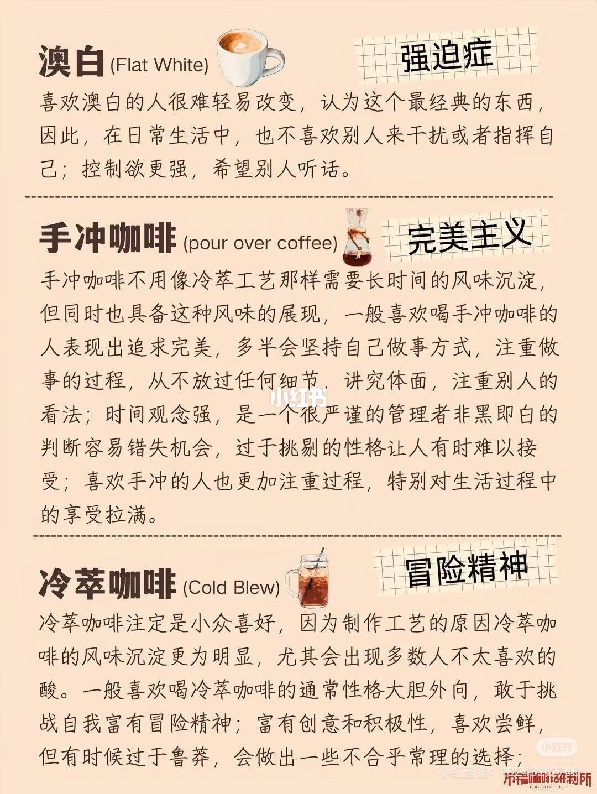

图文实录 · 小红书 · La
你喝的咖啡暴露了你的性格
四页把十一种咖啡各贴一个性格标签。这是趣味对照，不是性格测验。
1/4
美式和意式浓缩
图题是「你喝的咖啡暴露了你的性格」，角落署名不错咖啡研制所。美式的标签是极简主义者：不加糖不加奶，生活简单、容易满足、独立、对变化偏保守；开头显得高冷，熟了可以做长久的朋友。意式浓缩的标签是执行力强：苦、难定义；图上把它比成尝过苦的人，固执但不蠢，决策快，标准高，主见强，也会情绪化。

2/4
摩卡、拿铁、Dirty
摩卡的标签是爱玩爱自由：巧克力酱、浪漫、乐观、在意气氛；图上写他们可能不够专注，也不一定真喜欢咖啡本身，只是偶尔的妥协。拿铁的标签是喜欢交友、个性敏感：店里常点、层次细，外向温和，也犹豫，常要别人帮着做选择。Dirty 的标签是热情友好：冷奶加热浓缩，冰火一口喝完；直率、好奇、会带动旁边的人。

3/4
速溶、卡布奇诺、玛奇朵
速溶的标签是坦率随性：图上写成务实、要方便、要效率、现实、花钱谨慎。卡布奇诺的标签是情深意切：乐观、好交际、热心；奶泡盖住热咖啡被比成外表凉、里面热，念旧、忠诚，小事会忘。玛奇朵的标签是安静传统：保守、不太爱新东西、话少但可靠，适合长久深交。页上「卡布其诺」按图上的写法保留。

4/4
澳白、手冲、冷萃
澳白的标签是强迫症：图上写喜欢的人认定这是最经典的，不爱被指挥，控制欲强，希望别人听话。手冲的标签是完美主义：不需要冷萃那么长的沉淀也有风味；坚持自己的做法，盯过程、盯细节、在意体面和别人的看法，时间观念强；非黑即白会错过机会，挑剔让人难接受，也把生活过程的享受拉满。冷萃的标签是冒险精神：工艺让风味沉淀更明显，会出现很多人不要的酸；大胆、外向、敢挑战、爱尝鲜，有时鲁莽。

汇总
标签是作者贴上去的
十一杯的标签都在这四页：极简、执行力、爱玩、敏感交友、热情、随性、情深、安静传统、强迫、完美、冒险。笔记正文只说自己喜欢美式的醇、涩、甘，偶尔加奶加糖，没有解释这套性格。喝什么不能推出人是什么样。同一杯也会因店、浓度和加料变成别的味道。